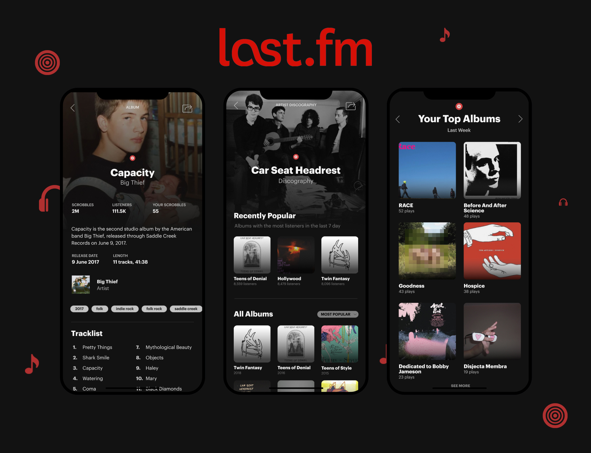
Last.fm is the music search & discovery network, still kicking over a decade later. In a time of streaming sites galore, its ability to aggregate and engage users over music stays relevant. As mobile usage grows, I thought of revamping the aged Last.fm application to build a proper space for the music we love.
This is a work-in-progress! (My Muji sketchbook is suffering!) Have other thoughts on the beloved music platform? Message me and let's talk about Last.fm!
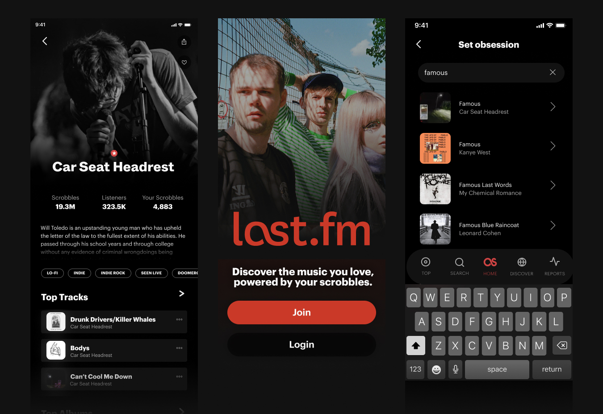
Context
The music platform for diehards
The beauty of Last.fm is that it puts discovery, community, and data together. Around for decades but more relevant than ever in a disjointed musicspace, I needed to visit it.
Last year, Spotify Wrapped told me I totaled 140,000 minutes of listening (excluding my YT + local collection). As a music fan, I fell in love with the product: it understands my activity over time, connects me with over buffs, and helps me find new new tracks.
In the age of streaming, Last.fm unifies music—more relevant than ever
First popularized when we torrented music files or just listened to YouTube music videos, Last.fm aggregates music from everywhere you listen: from Spotify to Deezer to your Bandcamp downloads
Here's the thing: Last.fm brands itself as your "musical calling card". However, the mobile application doesn't reflect this yet. I set out to design a mobile experience for Last.fm: the go-to place for music from everywhere should be accessible anywhere.
Last.fm on mobile today
 Present Last.fm mobile app
Present Last.fm mobile app
At present, the Last.fm mobile app shows you your aggregated music ("scrobble") history and some stats. Let's see what's missing.
Rationale
Streaming is so disjointed nowadays. I'm switching between Spotify, YouTube, my local files, Bandcamp, and more. Worse: It's hard for people to really get data to track things even if it's supposedly feeding into everything. But people love data. Spotify Wrapped is lauded as a genius marketing campaign. People still flex their music on their Instagram story (don't worry, I listen). People check http://107.170.81.187/ just to see their top artists.
This is where Last.fm fits in well. I'll be a forever advocate of how it's an underrated product that could boost itself up with a much-needed update.
Understanding Last.fm users
Collected from online comments and personal interviews, reaching out to people through a call, face-to-face, or in text.
Last.fm is populated by diehard music fans. These are people who want too understand their music activity closely, people who love statistics—these are people who enjoy seeing their music date back years, and socializing with people who do the same.
With these comments, I thought exploring a design that focused on bettering stat and history features—a key part of Last.fm's enjoyability today.
Problem Identification
Missing features 👎
No existing experiences for listening history, discovery, or socials
No mobile onboarding 👎
This alienates potential mobile-first listeners
Missing integrations 👎
Users aren't informed of where the app syncs music from
Minimal track information 👎
Unlike the web version, mobile has no biographies, lyrics, or info
I talked to existing Last.fm users and explored Last.fm alternatives to explore issues with the current mobile experience. What fI found aligned with my personal experiences: the Last.fm app is underwhelming, it displays the raw data, but doesn't synthesize it.
What does Last.fm serve when it tracks music you're playing on your phone, without letting you dive into that history? Tracking and listening history would become a priority.
As we go mobile: users should be able to breakdown their music history and pull it up as needed.
New Architecture & Map
For this iteration of the redesign, I prioritized building an onboarding flow, showcasing listening history and statistics, reworking the way music information is presented, and introducing the social aspects of the site on mobile through profiles.
 Mapping for a proposed redesign, first prioritizing the addition of stats, discovery, and minimal social features (profiles)
Mapping for a proposed redesign, first prioritizing the addition of stats, discovery, and minimal social features (profiles)
Intuitive spacial interfaces like Snapchat's are a huge inspiration in the mapping of this. Discovery should very much feel under the user's fingertips: which I want to intentionally imitate with the interaction design of the app. The user should be able to jump from artist to artist if a relation is present, and navigate their data in a sensible way.
Prioritizations
Universality 🌎
Remove complexity on web and make navigation as easy as flipping through a record collection
Immediacy 🗂
Focus on the music calling card aspect of the app, or discover at a glance
Data-driven 📊
Synthesize info on the app for users to understand: let this highlight Last.fm's discovery features
Constraints—instead of importing all web functions to mobile, I chose to impose some constraints on the features to bring in, such as minimizing social features to focus on core product functionality from what I garnered in research and analysis.
Key Assumption—Last.fm's edge is in its data. It is empowering to listeners when they can understand their behavior—no other music service understands this as well.
Asset Library
In these designs, you'll notice a heavy use of images. One impactful feature on Last.fm is community-voted images that overlay music pages. It's memorable and beautiful: I wanted to keep this level of customization and intimacy in.
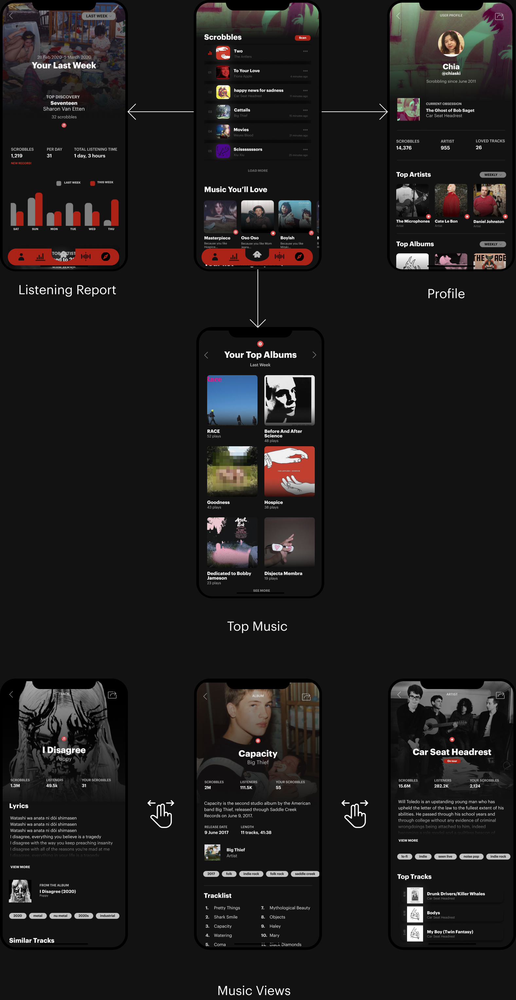 The key app screens in the redesign
App Flow
Something the Last.fm app gets right is that it's minimalist. It shows me my tops and latest scrobbles—that's it. I didn't want this redesign to be overwhelming with features, which is one of the downfalls of its web version (too many dead/underused features). I was careful to preserve common interactions after mapping out the app architecture.
OVERVIEW
A redesigned musicscape
Last.fm is an incredible product that has the potential to expand its existing demographic and userbase (largely diehard music fans, extensive listeners) into the masses. By pushing on screens and nudging the user towards discovery, I wanted to be intentional about including features that could build on this service. Brainstormed on paper, here are mid-fi screens I designed.
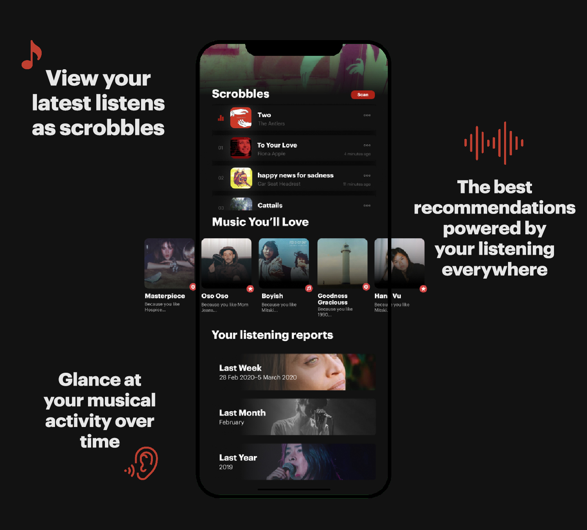
Discover and own your music.
A dashboard with discovery lets users focus on understanding and expanding their music.
In addition to scrobble history on your homepage, recommendations take stage as music you love is recommended to the user. Simple and straight to discovery, users can track their own activity and expand it with ease.
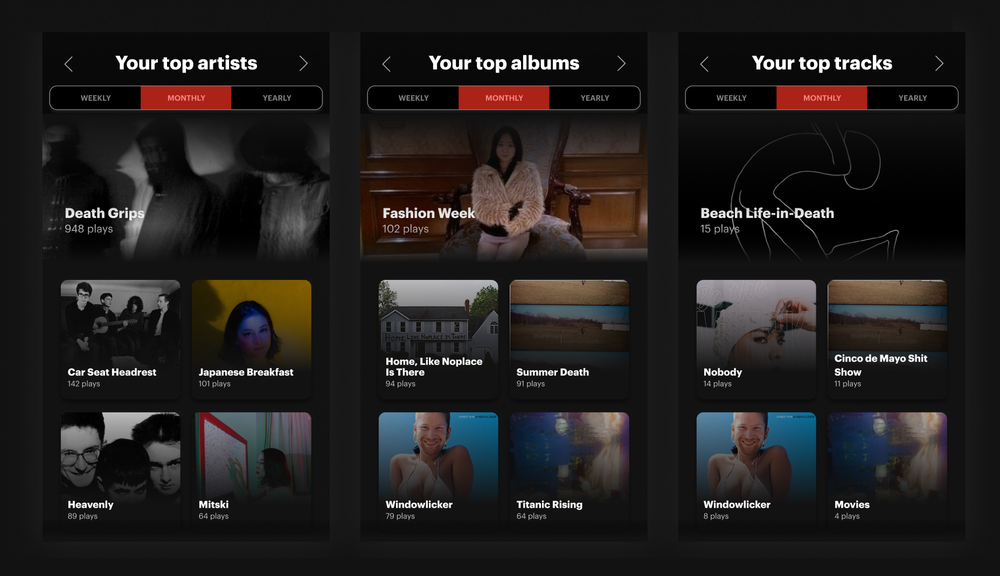
Your listening activity at a glance.
Swipe interactions to go through top music at different time levels.
A new approach at music history gives users the ability to see their musical activity at a glance with intuitive swipe gestures.

Your calling card & stats.
Easily look at a user's musicality with customized listener reports and profile views.
Spaces for user profile and listening reports give mobile users another layer of insight to their activity, and help them connect with other music fans. Social engagements begin and end with music.
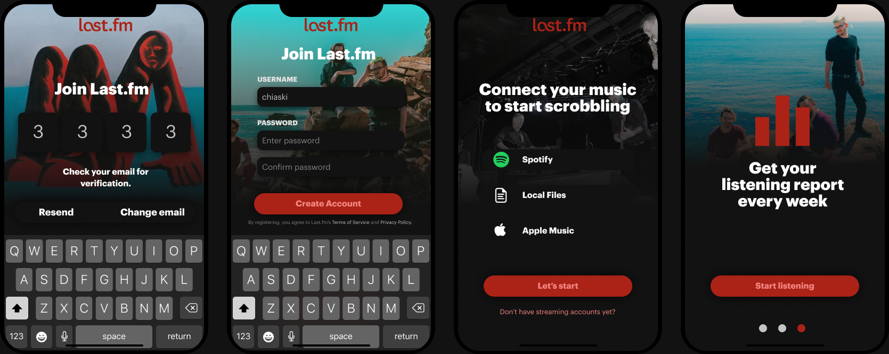
The experience starts on mobile.
A flow to capture mobile listeners.
Now music fans can begin exploring their tastes and history right from mobile. On-the-go music fans can spread their love for music, and have their friends hop onto the platform too.
With these changes, I would love to look into metrics around the usage of discovery features to find potential areas for expansion: are users tapping onto more music than before? How does a mobile listening report with stats on their activity change the way they act?
Take a closer look at how these screens were crafted with music and love, plus see them in action!
Process
Building ground for sound
Navigation
The redesigned navigation highlights new features brought into the app: profile, listening reports, and discovery. Top music swapping is consolidated into just one symbol in the navigation instead of being spread out.
Screen
Home Screen
 Present app home
Present app home
NEW HOME—On the new home, recent tracks are more condensed but offer users a direct way to visit their listening reports and discovery suggestions.
 Swipe to love interaction
Swipe to love interaction
Discovery—I also created a full screen for music discovery, akin to what's on the main page of Last.fm today.
Other behaviors that I wanted to introduce included the following:
- Loving tracks to save them: As highlighted above, users should be able to save and indicate their favorite tracks on-the-go, done through the love feature
- "Don't recommend": Sometimes we just don't want to hear something. This is also a feature on Spotify that I wanted to highlight here—users get to input their own form of 'moderation' and wants to the algorithm.
 Edit scrobble
Edit scrobble
Home Iterations
Explorations for the home screen and its alternative designs.
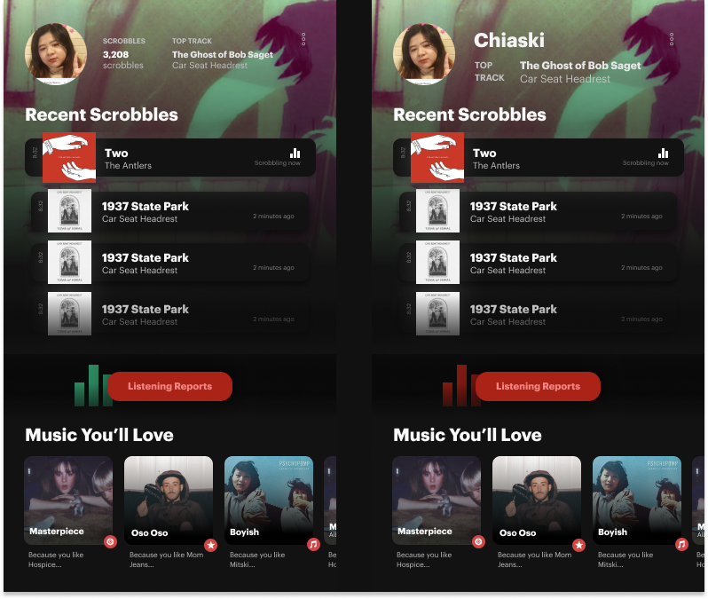
Home screen iterations Alternative home screen with scrobble and discover separated
Alternative home screen with scrobble and discover separatedTop Music
 Present top music
Present top music
TOP MUSIC—A swipe interaction easily lets users switch between their top artists, albums, and tracks.
With history levels present at the top, users can easily see their activity through time.
Users should be able to seamlessly swipe between their top artists, albums, and tracks. This simple gesture mimics the current application's layout, but brings the user to navigate without needing to click.
Music Page: Artists

ARTIST PAGE—Emphasis on discovery and providing a concise view of an artist's music.
Music Page: Albums

ALBUM PAGE—The redesign emphasizes the need-to-knows: release date, length, and an expandable about.
A tracklist offers an overview of the songs featured on the album; discovery follows at the end of the page.
Music Page: Tracks

TRACK PAGE—The background color on the track shifts based on the originating album. Lyrics are available in full through a modal.
 Lyrics modal for the track page
Lyrics modal for the track page
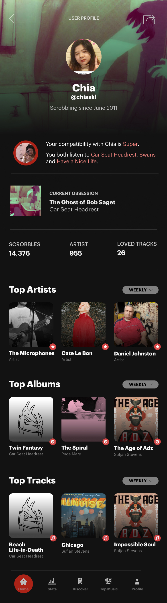
User Profiles
There was previously no profile page on mobile. Now, it's a social space to instantly see a user's top music, a glance at their listening activity, and more.
- Scrobble Counts displayed as bars encourage users to listen even more than previous weeks.
- Tag Timeline shows the diversity in music taste over time, and highlights the user-generated tags on Last.fm.
- Discoveries show users their top listens throughout the week.
- A listening clock provides a time-based glance.
On profiles at just a glance we get a snippet of a user's activity and history, week to week.
As a musical calling card, all music stats are compiled on the screen.
Other potential features for this space are neighbors (users with similar music tastes to you) and more details covering play counts & listener statistics.
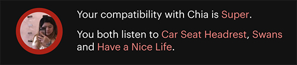 Your compatibility with Chia is Super
Social Compatibility—How do profiles come into play on the app? By taking a music-centric approach, user profiles can showcase music compatibility, and lead users to trails of new artists from other's own habits. It's social without being explicit about traditional, cluttered messaging and chat features that are better suited to the full website.
At the bottom of music pages, "Top Listeners" highlighted by recent activity can be displayed to further facilitate this.
Listening Report
This is Last.fm's edge: it gives users a data-driven glimpse into their musical history.
The reports are filtered by week, month, or year: with immediate scrobble counts, day views, overlaid on their top discovery of the week.
- Scrobble counts displayed as bars encourage users to listen even more than previous weeks.
- Top music highlights the user's top artist, album, and track.
- The Last.fm tag timeline shows the diversity in music taste over time, and highlights the user-generated tags on Last.fm.
- Discoveries show users their top listens throughout the week.
- A listening clock provides a time-based glance.
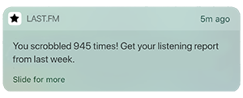
Listening Report Notifications—Last.fm also has incredible potential to use push notifications and emails to deliver users overviews of their activity, driving them to check their stats and discover some new music along the way.
Iterations
The evolution of these listening report views.

Registration and Onboarding
The lack of an onboarding experience on the present app presents a huge opportunity area to hit what is now a majority mobile-first demographic.
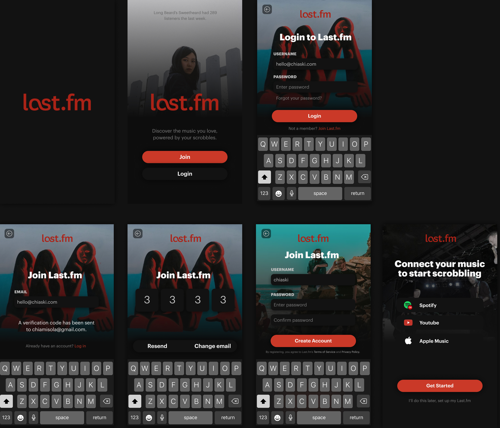
Visually, music is highlighted to hook users into syncing and signing up. As they connect services, background overlays shifts—showing how it truly revolves around your taste.
New launch—I cleaned up the Last.fm launch screen and like the website, added a rotating background image based on trending artists.
Key Assumption—Last.fm's edge is in its data. It is empowering to listeners when they can understand their behavior—no other music service understands this as well.
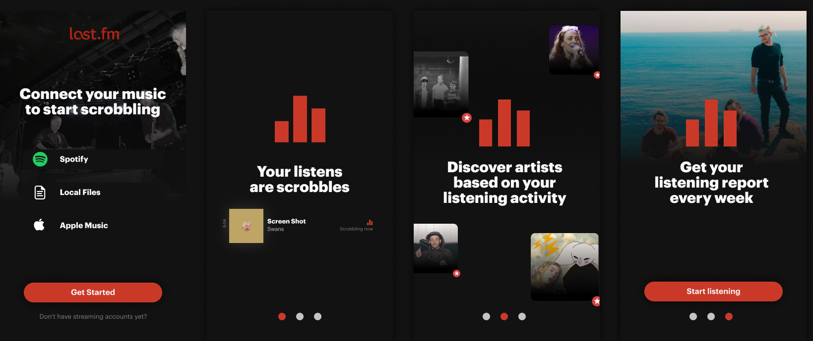
This new syncing and information sequence targets user confusion with where music was being pulled from, and gives a brief overview about Last.fm's core features and music terminology.
Iterations
Take a look at some of my explorations for the Last.fm iOS onboarding sequence.
 First concept, trying out changing background on albums and copy lifted from current web experience
First concept, trying out changing background on albums and copy lifted from current web experience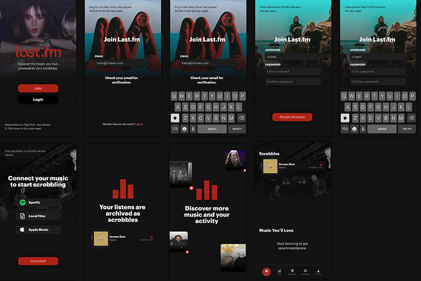 Expanded registration and onboarding sequence
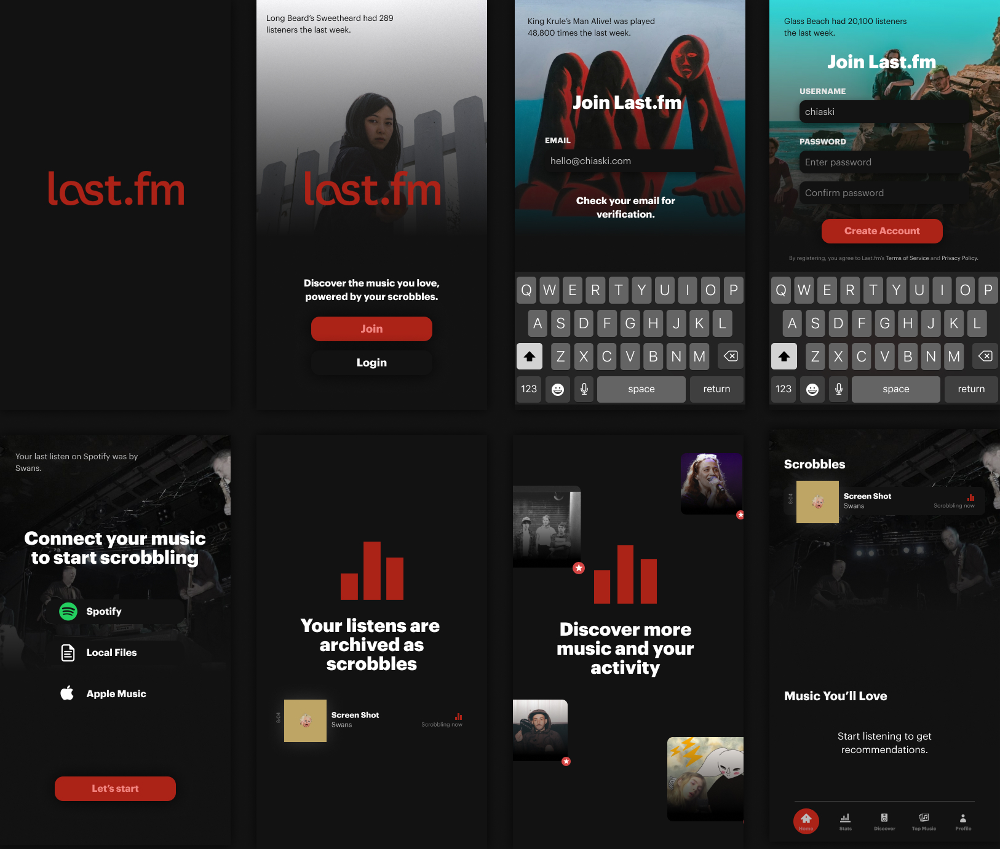 Expanded with loaders, fixing registration flows
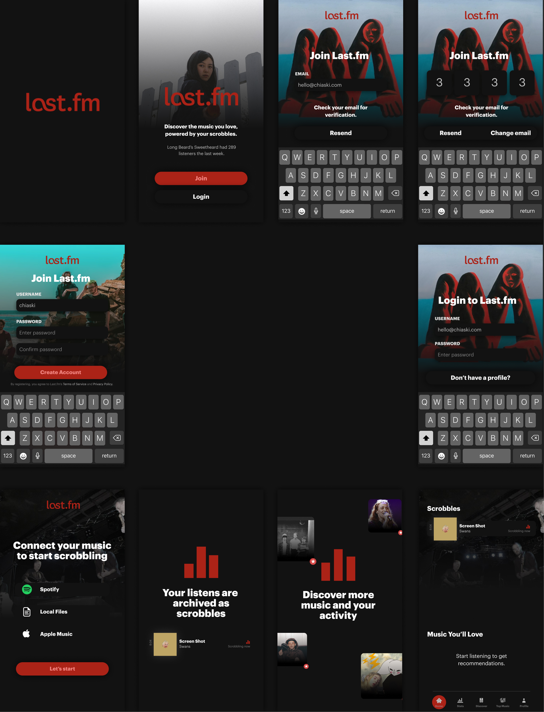 Expanded screens and guides
In progress: I'm exploring copies and ways to improve the home music screen right after registration.
Next Steps
As a product, Last.fm has a dwindling userbase and desperately needs to be the best at its many developed features over the years. To me and in this redesign, that was how in an age of mobile streaming over dozens of services: it connects and makes sense of everything, empowering me as a listener by letting me know the data behind my behavior.
Instead of falling into a trap of underused prompts or spaces, I'm interested in seeing how the dead simple edge as a musical calling card can lead to everything else: discovery, engagement, and more streams. I'm certain there's power in these building blocks even if the mobile redesign doesn't have the entire web featureset: there's already so much we can get from these numbers and materials. They're simply universal to every listener.
- Going social ❔
This design only featured user profiles as a beginning engagement space. If put into action, it would be interesting to observe data on how users engage with one another—especially while only currently prompted by music pages. - Listening activity ❔
With the redesign, it would be interesting to capture how much more active listeners are. Are they only checking on Last.fm to see their latest activity? Do their behaviors change now that there's more numbers and customization that reflect their listens?
Again, all of this is still a work-in-progress. Let me know what you think, or better yet—let me know how you listen.
Surfacing all the music you love.
Visit Last.fm